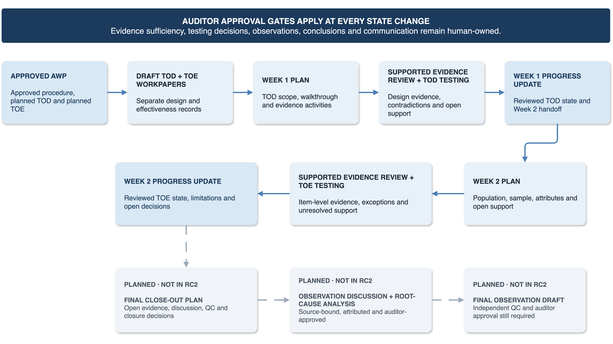
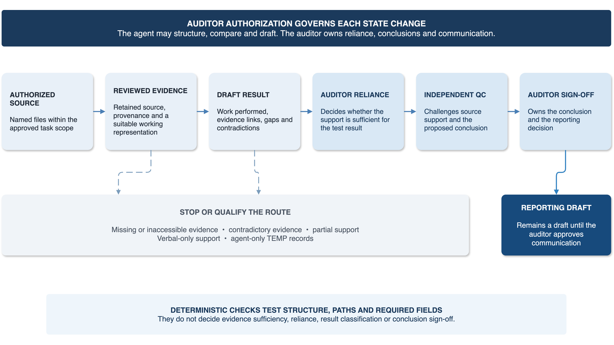

Engagement inputs
What the work may use
- Audit work program
- Criteria and methodology
- Permitted evidence
- Engagement context
AI-Augmented Engagement Operating System
AEOS is a file-based operating system for auditors working with AI. It turns an audit work program (AWP) into a controlled route for evidence, testing, workpapers and reporting drafts. It is independently developed, and actively used and tested in audit fieldwork.
Where AEOS works
AEOS picks up after the audit work program is authorized and stays with the engagement until the reporting draft. Three kinds of work happen in that span, and it supports each of them differently.
Sources are registered before anything relies on them, under a declared source mode: either an exact named file set, or approved roots with bounded link traversal. Provenance is recorded, and where an expected record was never provided, that becomes a named absence on the workpaper rather than a quiet omission. An optional evidence wiki gives the registered set a navigation layer, which is not itself evidence.
Test of design first, in week one. Test of operating effectiveness after, in week two, and only once the auditor has approved the design conclusion, the population, the completeness basis and the sampling method. Execution records are written to a separate working area and stop at an auditor checkpoint before any workpaper is updated.
Per-procedure progress updates are drafted from reviewed workpapers at the end of each week, with interim observations kept explicitly non-final. They are review-only drafts. AEOS never transmits one, and only an authorized person can send anything.
There is also an engagement buddy. When the work gets away from you, one read-only route ranks what is open right now into NOW, NEXT, WAITING and BLOCKED, with a source locator against each item. It changes nothing and decides nothing.
The point is not a faster first draft. It is getting through more of the evidence, at more depth, and still being able to show a reviewer how every statement got there.
What AEOS is
AEOS is a second reader for the engagement, built as a workspace rather than a chat window. It brings the engagement context, the AWP, criteria, evidence, workpapers, workflow instructions and review decisions into one place. It starts after the work program is authorized. From there it covers fieldwork preparation, meetings, evidence handling, design and implementation assessment, operating-effectiveness testing where applicable, review, progress updates and reporting drafts.
Engagement inputs flow through the governed operating core into draft audit work, while human decisions retain reliance and communication authority.
Engagement inputs
Governed operating core
Draft audit work
Human decisions
What separates this from a collection of audit prompts is where the controls live. Evidence state, workflow authority and approval are built into the product rather than added as reminders inside a prompt. The professional concepts draw on public audit guidance; the workflow stages, labels and workspace structure are AEOS design choices, not an IIA-prescribed methodology.

A walkthrough
Procedure AI-04 in a fictional GenAI change-governance engagement: assess whether production changes to a generative AI service are evaluated, authorized, deployed and monitored through change management. The auditor scoped it to the first half of 2026 and listed the evidence the assessment would need. A change register, deployment records, a model registry, evaluation records and authorization records. Five kinds of record. Watch what happens to the fifth.
The four captures below are literal screenshots of the demonstration workspace open in Obsidian and Visual Studio Code. The workspace and every record in it are synthetic and were built for publication. Select any image to open it at full size.
Obsidian

Visual Studio Code

Visual Studio Code

Obsidian

What happened
The fifth kind of evidence never arrived. The attribute that needed it, evaluation approved before deployment, points at E-004. E-004 was not among the four files the auditor authorized, and no approval record was provided. So the draft records exactly that, against that attribute: source gap.
That is the part worth having. Not a summary that quietly drops an attribute it had nothing for, and not an inference that the evaluation probably happened. A named attribute, pointing at a missing record, sitting on the workpaper where a reviewer will see it.
Nothing else moved either. Testing: not performed. Conclusion: blank, auditor-owned. The version comparison is prepared but left unconcluded, because finding an identifier in two sources is not the same as deciding they agree. Item-level testing waits until the auditor approves the population, sample, attributes and evidence route.
The engagement lifecycle
AEOS begins after the work program has been reviewed and authorized under the internal audit function's methodology. It does not require one fixed work-program layout: a wide spreadsheet and a narrative document can both enter through governed interpretation.
| Stage | What it produces | Auditor decision |
|---|---|---|
| 1. Set up the engagement | A registered engagement context, applicable criteria, AWP, source set, and AI read and write boundaries. | Resolve missing identifiers, inaccessible criteria and conflicting source versions. |
| 2. Prepare fieldwork | Interpreted procedures, workpaper scaffolds, walkthrough topics, evidence-request candidates, source-linked meeting and evidence records, and a fieldwork plan. | Review that interpretation before execution. |
| 3. Assess design and implementation | An assessment of whether the control exists, has been implemented, and is capable of mitigating the identified risk if it operates as intended. | Decide whether the work performed supports the design conclusion. |
| 4. Assess operating effectiveness | Item-level testing, where applicable, of whether a design-confirmed control operated consistently and correctly over the relevant period. | Approve the population, completeness basis, sampling method, selected items, attributes and evidence approach before testing. |
| 5. Review and reconcile | Separate read-only review that challenges source support, missing evidence, internal consistency, and conclusions exceeding the work performed. | Approve corrections, which are verified before merge. |
| 6. Prepare reporting | Progress and reporting drafts built from reviewed workpapers and documented exceptions. | Approve and send any external communication. |
A walkthrough can support the design-and-implementation assessment, but it does not establish sustained operation. These are AEOS product stages: public professional guidance provides context for work programs, design evaluation, testing, documentation and conclusions, but does not prescribe this six-stage structure.

What keeps the work reviewable
Internal audit work is a chain of dependent judgments. A workpaper depends on a defined procedure. A test result depends on retained and reviewed evidence. A conclusion depends on the attributes tested and the exceptions identified.
The states a draft can carry
An expected record was not provided. It is named against the attribute that needed it, not dropped from the analysis.
The authorized sources do not answer the question. The question stays open and goes to the auditor.
The record exists, but a field the criterion depends on is absent from it.
A comparison against the criterion is ready. The judgement it supports has not been made.
The source is registered and readable. Its reliability has not been reviewed yet.
Human authorization sits at the four points where work changes authority: an AWP procedure becomes a draft workpaper, received material becomes relied-upon evidence, a test result becomes an audit assessment, and a reviewed conclusion becomes external communication.

What you get and how you set it up
AEOS runs in Visual Studio Code and Obsidian. There is no separate backend and no service to sign up for. Everything you get is a file you can open, so the system can be inspected the same way the audit work can.
| What you get | What it is | What you do with it |
|---|---|---|
| Engagement workspace | A folder structure for context, plans, evidence references, workpapers, reviews and reporting drafts. | Open it once per engagement. Everything else runs inside it. |
| Task contexts | Definitions that set the professional perspective and the evidence, file and authority boundaries for a task. | Pick the one that matches the work before you start a task. |
| Governed workflows | Named routes defining required inputs, stage order, stop conditions and where output goes. | Invoke one per task. It runs against the sources you authorized. |
| Templates and guides | Readable output structures for workpapers and records, plus operator instructions. | Read the guide, review what the template produced. |
| Evidence and review controls | Source identity, provenance, derivative relationships, gaps, contradictions and draft state. | Nothing to configure. They keep draft output from becoming silent authority. |
| Deterministic checks | Optional Python checks for structure, paths, required fields and packaging. | Run them when you want a mechanical check. They never decide evidence or conclusions. |

Setting it up
Open the AEOS folder as a Visual Studio Code workspace and as an Obsidian vault. Both point at the same files.
Check that Visual Studio Code lists the AEOS task contexts and workflows, so the governed routes are selectable in Copilot Chat.
Select an approved route before selecting a model: a Copilot-hosted model inside an approved service boundary, or local Ollama through the supported provider extension.
Run one supported route against a sample engagement and confirm it produces the expected draft in the expected location.
Confirm which task context and model actually ran. Static documentation is not proof of the runtime route.
What invoking a governed route looks like
/tod-analysis-to-workpaper
AWP AWP04 sub-process rd_ai_change_control
Source mode EXACT_FILES
Approved AWP04, E-001, E-002, E-003, E-004
Do not select a sample · approve reliance
update the workpaper · conclude
Stop at auditor checkpoint
Requirements
The workspace remains readable and portable. Native originals stay linked and authoritative, while information used by AEOS agents and workflows is provided in reviewed Markdown working copies.
AEOS supports defined provider routes rather than generic model independence. The auditor chooses an approved route, then selects a model with the context, source-mapping, structured-output and file-tool capability required for the task.
Common questions
AEOS